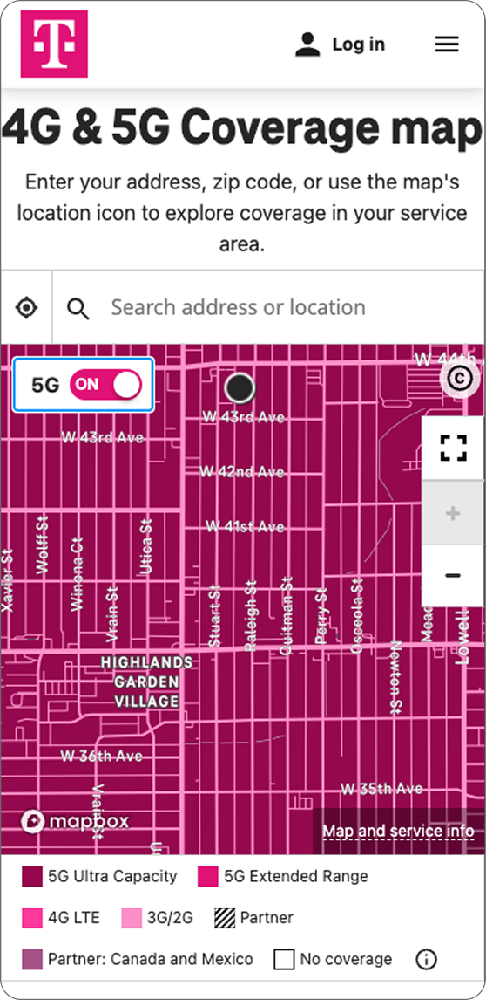

Reimagining Network Coverage for Millions

Made a dense network map readable at a glance
I led the end-to-end redesign of T-Mobile's coverage map across web, iOS, and Android, from research through engineering handoff. The work turned complex network and signal data into a map a normal person can read and trust.
High traffic, low understanding
6.2M people check T-Mobile's coverage every year, and 3.6M are prospective customers deciding whether to switch. But the map had a 55% churn rate, because people couldn't read it well enough to answer the one question that matters.
Will T-Mobile actually work where I live?
The question behind every visit
A map you can read without decoding a legend
Readable coverage layers
Signal strength and network type read instantly, without hunting through a legend.
Plain language over jargon
Search an address and get a verdict in plain words, not a color key to interpret.

A confident answer
Indoors and outdoors, spelled out. People leave knowing it will work for them.
The same location, read two ways

Limited usability, low comprehension.
People struggled to interpret the coverage layers and details.
A clearer map, a plain answer.
+65% comprehension · +35% usability
Easier to read, easier to trust
[Closing quote: real user or stakeholder line, confirm or replace]